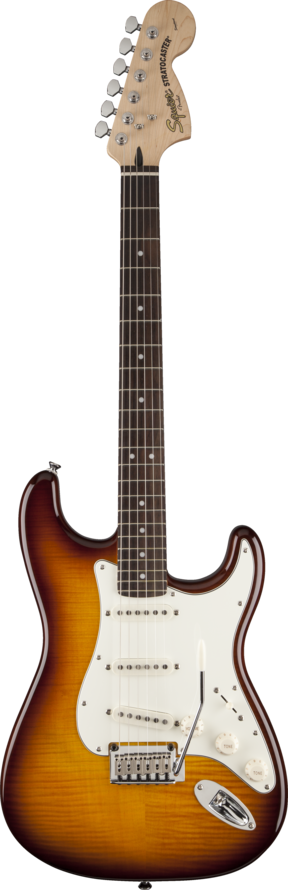

Gitarın Sesi ve Açıklaması İçin Tıkla
Strat Gitar
Nylon Gitar
Humbacker Gitar
Single Gitar
Anasayfa
Strat Gitar Nedir
Kimler Kullanır
Fiyatları Ve Özellikleri

Stratocaster, Amerikalı Fender gitar şirketinin ürettiği
en yaygın gitar modeli.
Stratocaster sevilen kasa yapısıyla, dünyadaki çoğu gitarın şekil olarak esinlendiği gitardır. Asıl modeli 3 single coil manyetikten oluşur